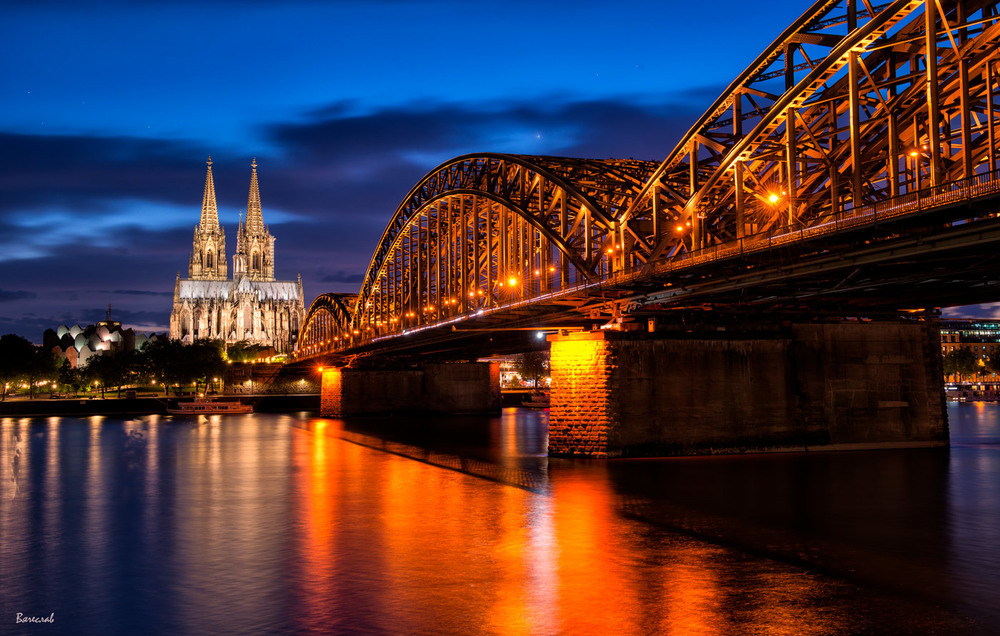

Нічне місто, освітлений міст перекинутий через спокійну ріку — атмосфера затишку й гармонії.Розквітлий бузок у ніжних фіолетових тонах — аромат весни в кожному пелюстку.Спокійна річка, через яку перекинута дерев’яна кладка — місце для тиші та роздумів.